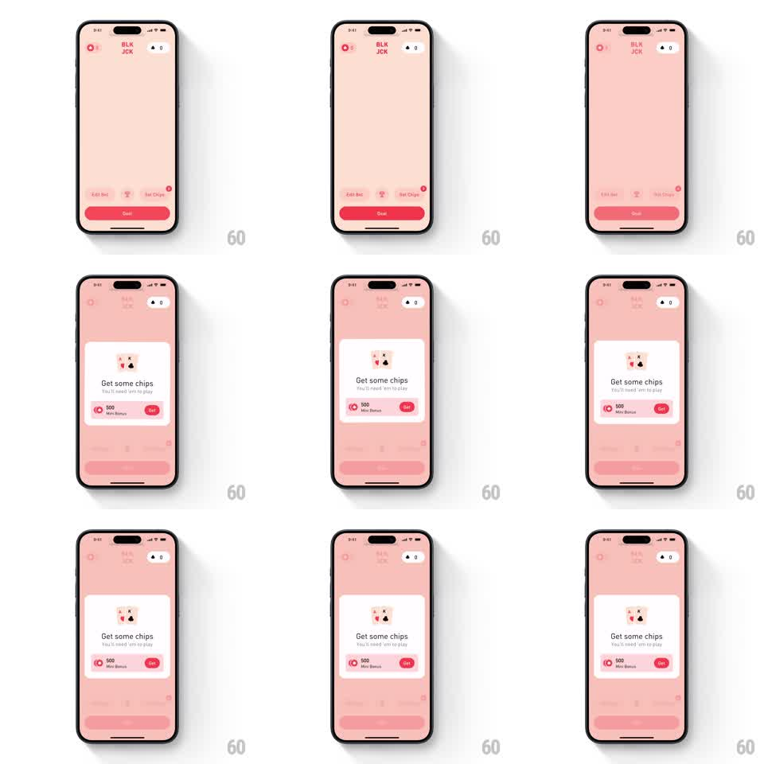

Media
Frame-by-frame

Rebuild this animation 1:1: BLKJCK's get-chips popup - a centered modal offers a chip bundle, and tapping Get shrinks the whole card into the bottom nav, leaving a red badge behind.

Rebuild this animation 1:1: BLKJCK's get-chips popup - a centered modal offers a chip bundle, and tapping Get shrinks the whole card into the bottom nav, leaving a red badge behind. ## Integration Integration: stack-agnostic spec - springs given as stiffness/damping, timed motions as duration + curve; map every value to your framework and animation library of choice. ## Scene Pink table with a dim overlay and a centered white modal: card-pair illustration, "Get some chips" title, subcopy, a "500 - Mini Bonus" row with a red Get button. A bottom nav bar sits beneath the dim. ## Motion spec Pattern: shrink-to-badge dismissal, ~600ms. - The modal enters with a spring pop (scale 0.85 to 1, stiffness 320 damping 17) when the balance hits zero. - On Get, the modal scales down and fades toward the bottom nav's Get Chips item (400ms, ease-in), as if being absorbed into the tab. - As it lands, a red notification badge pops onto that tab (scale 0 to 1.2 to 1, spring stiffness 400 damping 13) and the dim fades out (250ms). - The header balance rolls up by the bundle amount on the landing beat. ## Calibration - The shrink targets the nav item's exact position - the card must visibly become the badge's container. - The badge pop happens after the card is fully gone; overlapping them muddies the cause and effect. ## Reduced motion Modal fades out; badge fades in. ## Don't miss - The dim covers the table but never the nav bar - the destination must stay visible for the shrink to read. - The modal's contents (title, row, button) fade slightly ahead of the card's scale, so no text is seen squashing.